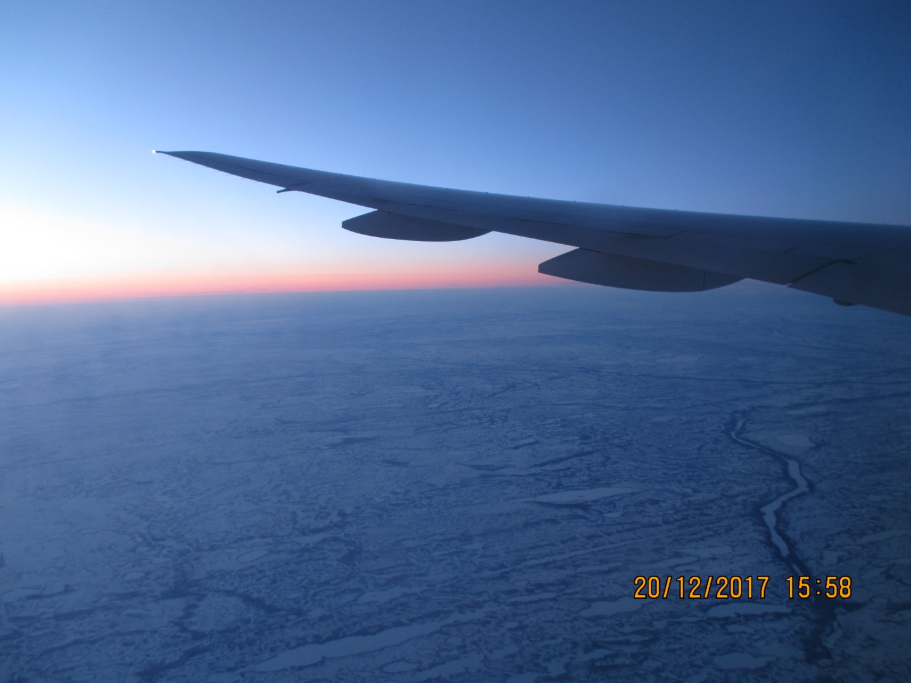
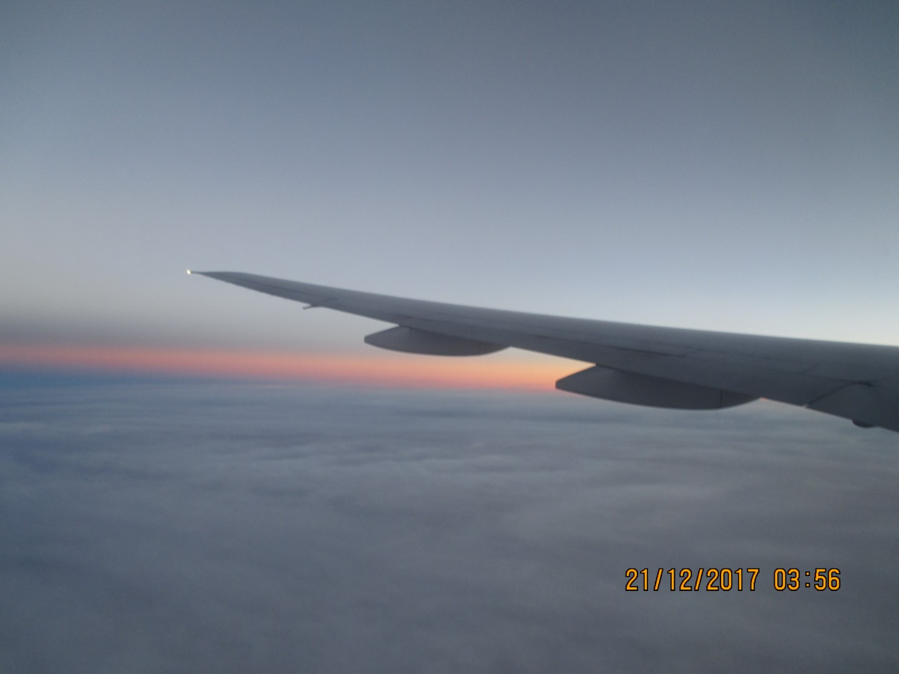
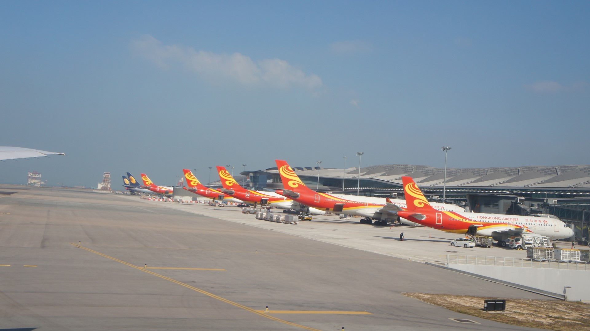
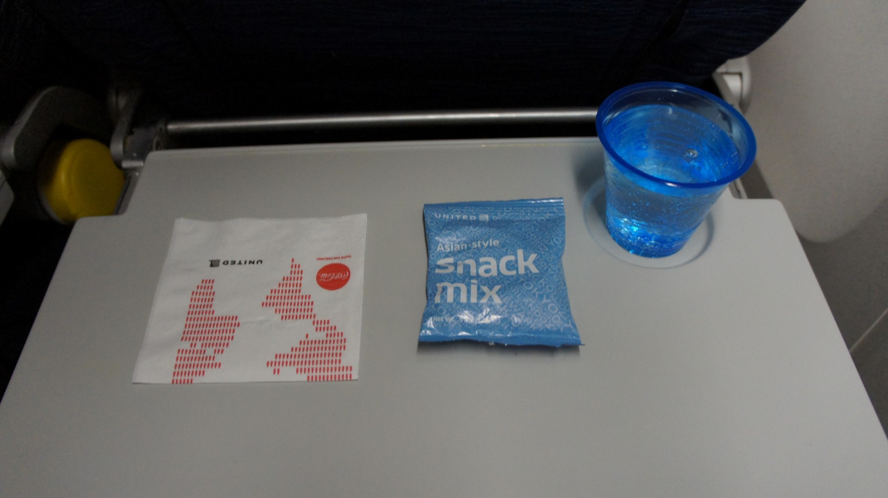

United Airlines Boeing 777-200ER Chicago to Hong Kong and Back, December 2017
From the Hilton Garden Inn hotel stay last night I took a shuttle straight to the Economy check-in for United. Which was not a bad place to start. Except I got a bloody nose. So that was nice.
If you have TSA Precheck, you’ve probably talked about clearing security really quickly. Well it took 5 minutes today. Which is great.

 Being honest, I’ve departed out of all of the big gates at the C concourse except C10… and that changed today.
With these planes coming out of Terminal 5 (thanks to the only international arrivals facility on the entire property),
it’s often that these planes would have to be towed to the gate, so if you get to C16 early enough,
you can see the entire plane. Because you’re not going to see it from Gate C10. The caveat is if there is a flight
about to close, then you’ll get the question of whether you’re flying to (said destination). That’s ok though.
Being honest, I’ve departed out of all of the big gates at the C concourse except C10… and that changed today.
With these planes coming out of Terminal 5 (thanks to the only international arrivals facility on the entire property),
it’s often that these planes would have to be towed to the gate, so if you get to C16 early enough,
you can see the entire plane. Because you’re not going to see it from Gate C10. The caveat is if there is a flight
about to close, then you’ll get the question of whether you’re flying to (said destination). That’s ok though.
 N226UA will fly to Hong Kong today. Oh look, there she is!
N226UA will fly to Hong Kong today. Oh look, there she is!
Advice: don’t go to any of the large gates unless there’s no flight out of them. You will definitely regret it seeing there’s no space on a normal day. Unless there’s no flight within two hours.
 With 10 minutes left before boarding, I lined up for Group 2, where I had my Passport and boarding pass checked.
Legroom was not bad.
With 10 minutes left before boarding, I lined up for Group 2, where I had my Passport and boarding pass checked.
Legroom was not bad.
 After boarding, N794UA parked at C16 for a flight to Munich. Which would’ve been nice if she operated ours today,
but it’s nice to see some special colors aircraft hanging around.
After boarding, N794UA parked at C16 for a flight to Munich. Which would’ve been nice if she operated ours today,
but it’s nice to see some special colors aircraft hanging around.
Yes, there are meals for a long flight (15 hours and 55 minutes blocked). Choices were Hoisin Chicken with Rice or Chinese Style Noodles. Yes, that was actually how it was broadcast. I had the rice with chicken. No complaints for the meal today.
When the cart came to us, the FA said that she only had noodles left, but another FA came and added more of the rice option to her stock. Of course, I took the rice.
Mango Sorbet from Villa Dolce and water was served after the main meal. Ehh… it was ok.

 After eating, I checked the entertainment screen. Umm… it’s 2017, so, uhh, we’ll leave it at that. Photos from the
return flight with the same screen.
After eating, I checked the entertainment screen. Umm… it’s 2017, so, uhh, we’ll leave it at that. Photos from the
return flight with the same screen.
Wi-fi was also an option. Neither was what I needed. I needed sleep. And some writing time.
A snack was served mid-flight, which was a sandwich and a candy bag. Vegetarian or Turkey. I had turkey. Gobble Gobble. With some OJ.
 The sun goes down.
And the sun comes up.
 And goes down again.
For this route and probably longer westbound Transpacific flights in the winter.
But it’s cold. And it shows with the condensation.
So yeah, two sunsets for this flight.
Then it’s breakfast. Or dinner? I prefer brekkie. Brekkie was eggs or toast. Toast is recommended, along with fresh fruit. I think the eggs option was advertised as a “Skillet” with cheese and potatoes.
 And we did have to hold for 20 minutes thanks to the fast flight, but that’s ok. We parked right in front of
Immigration, and I left the airport in 30 minutes.
And we did have to hold for 20 minutes thanks to the fast flight, but that’s ok. We parked right in front of
Immigration, and I left the airport in 30 minutes.
 Return flight was with a similar plane N228UA. Though I had a new camera that was much better (it's much clearer
and you can definitely tell there was no date issue (ignore the dates and times on the photos, they're wrong.
Return flight was with a similar plane N228UA. Though I had a new camera that was much better (it's much clearer
and you can definitely tell there was no date issue (ignore the dates and times on the photos, they're wrong.
Another United aircraft (this time a Boeing 777-300ER to San Francisco) was towed. Actually that flight would've used our gate, but there was a gate swap for some reason. It was broadcast all over the terminal. N2341U spent the night in Hong Kong.
Boarding on time with a quite invasive interview, then a compulsory second bag search for everyone. I was asked questions about my school and what classes. I'm returning home...
 Quick taxi to the runway, passing along those Hong Kong Airlines aircraft lineup at the Midfield Sattelite Concourse. And two Jet Airways (I think).
 With food served again after takeoff. Starting with snacks and drinks (I had a Lime Sparkling Water from Dasani’s).
Choice was between pasta and rice with chicken. Both come with salad and bread.
 I had the pasta option. Don't be fooled by how it looked, it was pretty good.
I had the pasta option. Don't be fooled by how it looked, it was pretty good.
My seatmate let me photograph his choice of rice with chicken. He said it was good.
 Another Lime Sparkling Water from Dasani’s for me, this time with the can.
Another Lime Sparkling Water from Dasani’s for me, this time with the can.
Nighttime falls.
 Breakfast is actually breakfast with the time (around 10:00 Chicago time). At least this flight gets it.
Though it’s just a hot entree with cookie.
Breakfast is actually breakfast with the time (around 10:00 Chicago time). At least this flight gets it.
Though it’s just a hot entree with cookie.
I had the quiche option. It came with some vegetables and sausage. All were good enough.
 Here was the fried noodles option, which was ok.
Here was the fried noodles option, which was ok.
I preferred fruit though, and a cookie is nice, but not very filling.
 These were nice flights, partially because I had the same flight attendant working both flights.
We did talk a bit, but we got to know each other a little better. He’s nice and he’s based in Hong Kong.
These were nice flights, partially because I had the same flight attendant working both flights.
We did talk a bit, but we got to know each other a little better. He’s nice and he’s based in Hong Kong.
Meals were fairly good, I could eat it and it was tasty. I would definitely recommend my choices.